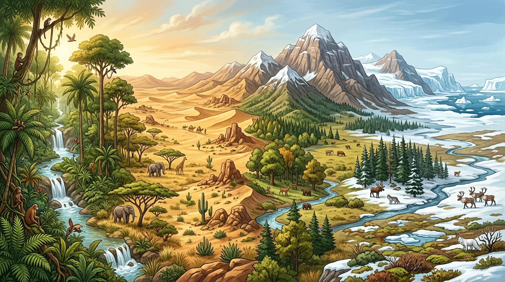

你知道不同地方气候不同 · 但不清楚为什么从赤道到极地植被会规律性变化 · 自然地理环境的地域分异规律（纬度地带性、经度地带性、垂直地带性）解释这一切
说出三种分异规律的名称及主导因素
能判断某地属于哪个自然带
对比不同自然带的气候—植被—土壤特征
从赤道到极地的地域分异，主导因素是？
已知：你知道不同地方气候不同
问题：但不清楚为什么从赤道到极地植被会规律性变化
解法：自然地理环境的地域分异规律（纬度地带性、经度地带性、垂直地带性）解释这一切
点击时代按钮切换疆域版图；悬停高亮边界；点击红色城市标记查看详情。
温带荒漠带出现在内陆地区，体现了哪种分异规律？
有疑问？点击提问！
1. 为什么赤道地区比两极地区温暖？2. 我国东部沿海和西部内陆的植被类型有什么不同？3. 高山上的自然带分布与平原有何区别？
1. 判断正误：所有沙漠都分布在回归线附近。2. 若某山地基带为热带雨林，其2000米处可能是什么自然带？3. 分析日本暖流对东亚自然带分布的影响。
常见错因是混淆地带性与非地带性因素。误区一：认为所有自然带都严格沿纬线分布，忽视洋流、地形的影响；误区二：将垂直带谱简单等同于纬度带谱。诊断时需强调：地带性是基础背景，非地带性是局部变异，两者共同塑造实际自然带格局。
迁移挑战：设计一个校园微自然带观察实验，分析教学楼北侧与南侧（或低洼处与高处）的小气候差异如何导致植被分布不同，撰写探究报告说明其与宏观自然带规律的相似性。
先独立作答，再点选项查看对错与错因。
下列哪一因素对纬度自然带的形成影响最大？
下列哪个自然带主要分布在南北纬30°附近？
北极苔原带植被矮小的主要原因是？
地球上自然带的分布主要遵循____地带性规律
答案：纬度
自然带主要随纬度变化而变化
热带雨林带的典型气候特征是____
答案：全年高温多雨
热带雨林带位于赤道附近，受赤道低压带控制
关于自然带的说法正确的是？
选择三个不同纬度的地区（如赤道、北纬30°、北极），比较它们的自然特征